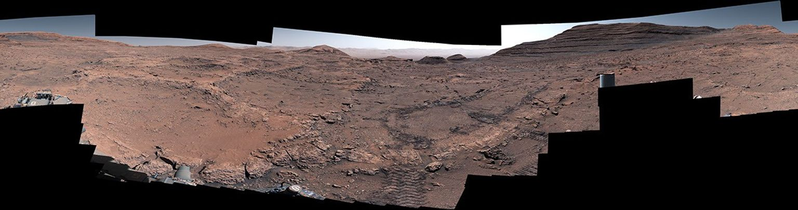

You start at Base Camp on the flat crater plain. The pulsing blue dot shows where your habitat is right now.
The red pin is where you're walking. Tap "Change" in the top search bar to pick landmarks, or click anywhere on Mars to drop a pin.
The dashed blue ring around your base shows your oxygen safety limit (3.2 km). As long as you stay inside this ring, you have enough suit oxygen to walk back safely. Going beyond it requires a rover!
Tap the yellow Pegman button or the Street View button to stand on the surface and look around 360° at real Curiosity rover panoramic photos with live elevation.
Tap the green "Start" button to simulate the walk with live suit oxygen burn and GPS tracking.
Topography: NASA Mars Global Surveyor (MGS) MOLA laser altimetry.
Surface Photography: NASA Curiosity Rover Mastcam panoramas and MRO HiRISE orbital cameras.
Environment: NASA MSL REMS daily surface weather and RAD radiation measurements.